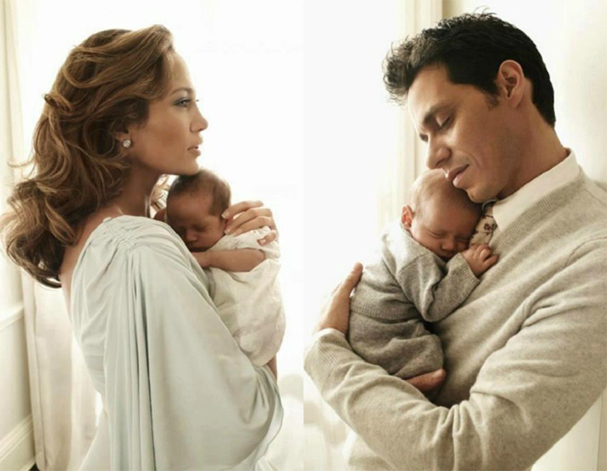
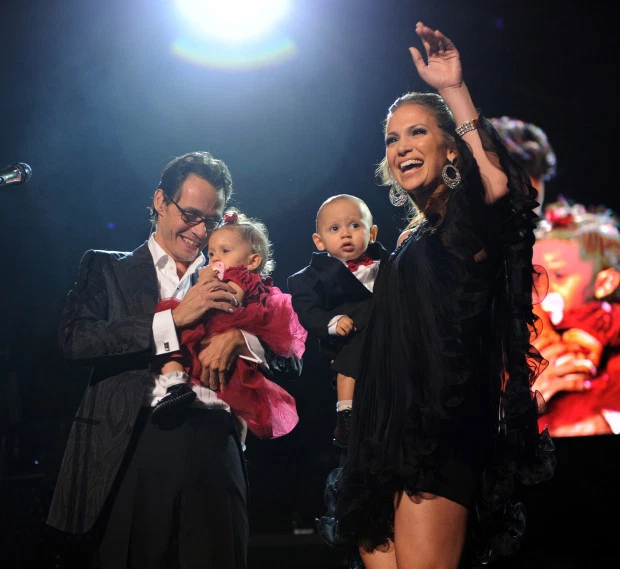

| |
TRANG CHỦ | ĐĂNG KÍ | MUA HÀNG | GIỎ HÀNG | LIÊN HỆ | |
| |
TRANG CHỦ | ĐĂNG KÍ | MUA HÀNG | GIỎ HÀNG | LIÊN HỆ | |
|
Cặp song sinh của Jennifer Lopez Bé Emme và Max - hai người con sinh đôi của ca sĩ Jennifer Lopez với Marc Anthony - đã bước sang tuổi 12 và thừa hưởng tài năng ca hát của mẹ. Jennifer Lopez sinh con gái Emme và con trai Max vào tháng 2/2008. Trong bài đăng trên Instagram kỷ niệm ngày sinh của hai con vào tuần trước, J.Lo lần đầu tiết lộ bức ảnh cặp song sinh trong nôi khi mới chào đời. Cô thổ lộ: "Mẹ biết giờ hai con đã 12 tuổi, nhưng các con mãi là bé yêu của mẹ". 
Cặp song sinh là trái ngọt tình yêu của Jennifer với nam ca sĩ Marc Anthony sau bốn năm kết hôn. J.Lo cho biết, cô mang bầu hai con một cách hoàn toàn tự nhiên chứ không hề thụ tinh nhân tạo. Thời điểm đó, tạp chí People đã mua bản quyền đăng những bức ảnh đầu tiên của hai nhóc tỳ với giá 6 triệu USD. Vợ chồng Marc - Jennifer đưa hai con một tuổi lên sân khấu. Đến năm 2011, cặp sao ly hôn nhưng cam kết trở thành bạn bè thân thiết để cùng chăm sóc các con. Khi hai tuổi, Max và Emme đã chụp hình quảng cáo cùng mẹ cho thương hiệu thời trang Gucci.Jennifer tâm sự cuộc đời cô thay đổi từ khi trở thành mẹ. Các con đã dẫn dắt tôi theo một hướng khác, J.Lo chia sẻ trên tạp chí People. Tôi từng không quan tâm tới trái tim và bản thân mình nhưng các con đã giúp tôi sống có trách nhiệm và yêu thương. Tôi chỉ biết rằng, mình đã trở nên tốt hơn nhiều.Trong một bài đăng trên Instagram, nữ ca sĩ củng thổ lộ: Các con đã dạy mẹ về tình yêu, cuộc sống và bản thân theo cách mà mẹ chưa bao giờ tưởng tượng ra. Mẹ mãi yêu những khuôn mặt xinh đẹp này. Jennifer tâm sự cuộc đời cô thay đổi từ khi trở thành mẹ. "Các con đã dẫn dắt tôi theo một hướng khác", J.Lo chia sẻ trên tạp chí People. "Tôi từng không quan tâm tới trái tim và bản thân mình nhưng các con đã giúp tôi sống có trách nhiệm và yêu thương. Tôi chỉ biết rằng mình đã trở nên tốt hơn nhiều". Trong một bài đăng trên Instagram, nữ ca sĩ củng thổ lộ: "Các con đã dạy mẹ về tình yêu, cuộc sống và bản thân theo cách mà mẹ chưa bao giờ tưởng tượng đến. Mẹ mãi yêu những khuôn mặt xinh đẹp này". J.Lo tiết lộ, cô bé Emme chào đời sớm hơn cậu bé Max 11 phút. Emma có gương mặt rất giống mẹ và cũng đam mê ca hát. Emme học thanh nhạc từ nhỏ, từng xuất hiện trong MV "Limitless" của mẹ và gần đây gây bất ngờ với màn trình diễn ấn tượng tại Super Bowl. Hai bé đến trường như những đứa trẻ bình thường khác trong khi mẹ đi lưu diễn khắp thế giới. Jennifer thường chọn những dự án phim quay ở Los Angeles để có nhiều thời gian ở nhà với các con. Trong khi mẹ đi lưu diễn, hai bé đến trường như những đứa trẻ bình thường khác ở Los Angeles. Jennifer thường chọn những dự án phim quay trong nước để có nhiều thời gian bên các con. Jennifer Lopez hiện sống cùng chồng sắp cưới là ngôi sao bóng chày Alex Rodriguez. Anh cũng có hai người con gái từ cuộc hôn nhân trước. J.Lo và Alex luôn coi con riêng của nhau như con ruột của mình. Hai con gái của Alex và cặp song sinh của J.Lo thân thiết như chị em. Alex Rodriguez rất hạnh phúc khi được trở thành bố dượng của hai con Jennifer. Trong ngày sinh nhật 12 tuổi của Max và Emme, cầu thủ 45 tuổi thổ lộ: "Chúc mừng sinh nhật hai con!!! Chú thật tự hào về hai con và cảm thấy quá may mắn khi được trở thành một phần trong cuộc sống của các con. Chú yêu các con!". 
|